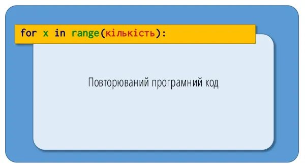
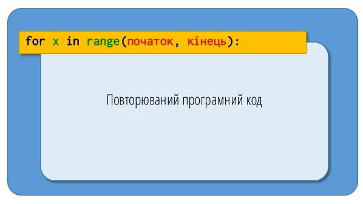
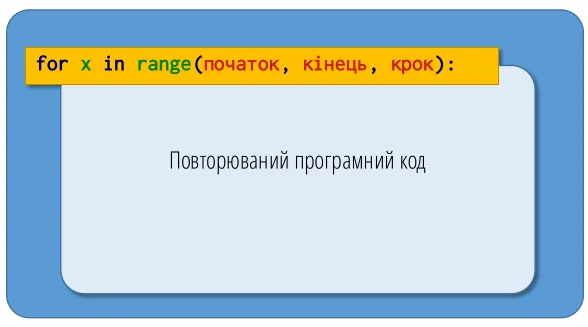
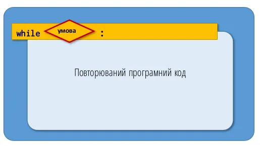
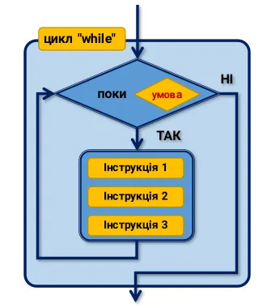

forУ програмуванні ми часто змушені повторювати інструкцію кілька разів. Цикли, невід'ємні від будь-якої мови програмування, допомагають виконати повторюване завдання компактно та ефективно.
Уявіть, наприклад, що ви хочете вивести елементи списку один за одним. З вашим поточним рівнем знань довелося б набрати щось на кшталт:
frukty = ["яблуко", "банан", "апельсин", "груша"]
print(frukty[0])
print(frukty[1])
print(frukty[2])
print(frukty[3])
Якщо ваш список містить лише 4 елементи, це ще здійсненно, але уявіть, що їх 100 або навіть 1000! Щоб вирішити цю проблему, використовують цикли. Подивіться на наступний приклад:
frukty = ["яблуко", "банан", "апельсин", "груша"]
for frukt in frukty:
print(frukt)
🖥 Результат:
яблуко
банан
апельсин
груша
Прокоментуємо детально, що відбулося в цьому прикладі. Змінна frukt називається ітераційною змінною: вона послідовно набуває різних значень списку frukty на кожній ітерації (проході) циклу. Можна вибрати будь-яке ім'я для цієї змінної. Вона створюється Python вперше, коли виконується рядок із for (якщо вона вже існувала, її вміст буде перезаписано). Після завершення циклу ітераційна змінна frukt не знищується і зберігає останнє значення зі списку frukty (тут — "груша").
Ітерація — один окремий крок циклу, тобто одне «проходження» через один елемент послідовності. Коли цикл
forобробляє список з 4 елементів, він виконує 4 ітерацій — по одній на кожен елемент.
Зверніть увагу на типи змінних, що використовуються тут:
frukty — це список, по якому ми ітеруємо;frukt — це рядок, оскільки кожен елемент списку frukty є рядком.Ітераційна змінна може бути будь-якого типу залежно від списку, який перебирається. У Python цикл найчастіше ітерується по так званому послідовному об'єкту (тобто об'єкту, що складається з інших об'єктів), такому як список. Такі об'єкти називають ітерованими, оскільки по них можна виконувати цикл. Далі ми побачимо й інші послідовні об'єкти, придатні для ітерації.
Ітераційна змінна (або змінна циклу, англ. loop variable) — змінна, яка на кожній ітерації циклу приймає значення чергового елемента з ітерованого об'єкта.
Зверніть увагу на символ двокрапки : в кінці рядка, що починається з for. Це означає, що цикл for очікує блок інструкцій — усі інструкції, які Python повторюватиме на кожній ітерації циклу. Цей блок називається тілом циклу. Як вказати Python, де починається й закінчується цей блок? Це визначається виключно відступом, тобто зміщенням вправо рядка (або рядків) блоку інструкцій.
Поняття блоку інструкцій та відступів розглядалися в Розділі 1 «Вступ».
У наступному прикладі тіло циклу містить дві інструкції (рядки 2 і 3), оскільки вони мають відступ відносно рядка з for:
for frukt in frukty:
print(frukt)
print(frukt * 2)
print("Кінець")
Останній рядок (print("Кінець")) не є частиною тіла циклу, оскільки він знаходиться на тому самому рівні, що й for (тобто без відступу відносно for). Зверніть також увагу, що кожна інструкція тіла циклу повинна мати однаковий відступ (тут — 4 пробіли).
Окрім кращої читабельності, двокрапка та відступ формально обов'язкові в Python. Хоча можна робити відступи як завгодно (кілька пробілів або кілька табуляцій, але не їхню комбінацію), рекомендується використовувати чотири пробіли. Докладніше про це — у Розділі «Найкращі практики програмування на Python». Налаштуйте свій текстовий редактор так, щоб він вставляв чотири пробіли при натисканні клавіші Tab.
Якщо забути відступ, Python поверне повідомлення про помилку:
frukty = ["яблуко", "банан", "апельсин", "груша"]
for frukt in frukty:
print(frukt)
🖥 Результат:
print(frukt)
^
IndentationError: expected an indented block after 'for' statement on line 2
У наведених вище прикладах ми ітерувалися безпосередньо по списку. Оскільки зріз списку сам є списком, ми можемо ітеруватися і по ньому:
frukty = ["яблуко", "банан", "апельсин", "груша"]
for frukt in frukty[1:3]:
print(frukt)
🖥 Результат:
банан
апельсин
Цикли for можуть використовувати список рядків, але також і список цілих чисел (або будь-якого іншого типу):
for i in [1, 2, 3]:
print(i)
🖥 Результат:
1
2
3
range()Python має функцію range(), з якою ми вже зустрічалися в Розділі 4 «Списки». Вона зручна для автоматичної ітерації по послідовності цілих чисел:
for i in range(4):
print(i)
🖥 Результат:
0
1
2
3
У цьому прикладі варто зробити кілька важливих зауважень:
list(range(4)), функцію range() можна використовувати безпосередньо в циклі. Не потрібно писати for i in list(range(4)):, хоча це також спрацювало б.range() — це функція, спеціально розроблена для ітерації[^1]; для Python це окремий тип: наприклад, в інструкції x = range(3) змінна x має тип range (так само як типи int, float, str чи list).list(range(4)) перетворює об'єкт типу range на об'єкт типу list. Це функція приведення типів (casting), яка конвертує один тип в інший (див. Розділ 2 «Змінні»).
Один, два або три аргументи. Насправді range() може приймати від одного до трьох аргументів:
range(stop) — цілі числа від 0 до stop - 1;

range(start, stop) — цілі числа від start до stop - 1;

range(start, stop, step) — цілі числа від start до stop - 1 із кроком step.

print(list(range(5)))
print(list(range(3, 8)))
print(list(range(2, 11, 2)))
🖥 Результат:
[0, 1, 2, 3, 4]
[3, 4, 5, 6, 7]
[2, 4, 6, 8, 10]
Крок step може бути й від'ємним — тоді послідовність буде спадною:
print(list(range(10, 0, -1)))
🖥 Результат:
[10, 9, 8, 7, 6, 5, 4, 3, 2, 1]
Зверніть увагу, що верхня межа (
stop) ніколи не входить у послідовність — саме томуrange(0, 10, -1)(без зміни напрямку меж) поверне порожню послідовність. Коли крок від'ємний,startмає бути більшим заstop.
Немає сенсу використовувати в циклі конструкцію for i in list(range(4)): — це навіть контрпродуктивно. Об'єкт range() зберігає лише поточне число, крок і кінцеве значення — тобто фактично 3 числа, незалежно від довжини послідовності, навіть для range(1000000). Якби ми використали list(range(1000000)), Python спочатку побудував би в пам'яті список з мільйона елементів, а вже потім ітерувався б по ньому — це велика втрата часу й пам'яті.
У попередньому прикладі ми обрали ім'я i для ітераційної змінної. Це усталена практика в програмуванні: вона зазвичай вказує на ціле число (ім'я i, ймовірно, походить від слова індекс, англ. index). Радимо дотримуватися цієї угоди, щоб уникнути плутанини. Якщо ви ітеруєтеся по індексах, називайте змінну i (наприклад, for i in range(4):).
Якщо ж ви ітеруєтеся по списку рядків (чи іншого типу даних), використовуйте більш промовисте ім'я. Наприклад:
for imya in ["Оксана", "Богдан", "Іван"]:
...
або
for chastka in [0.12, 0.53, 0.07, 0.28]:
...
Повернемося до списку frukty. Переберемо його, цього разу ітеруючись по індексах:
frukty = ["яблуко", "банан", "апельсин", "груша"]
for i in range(4):
print(frukty[i])
🖥 Результат:
яблуко
банан
апельсин
груша
Змінна i набуває послідовних значень 0, 1, 2 і 3, і ми звертаємося до кожного елемента списку frukty за його індексом (frukty[i]). Знову зверніть увагу на ім'я i, оскільки ми ітеруємося по індексах.
Коли обирати той чи інший підхід? Найефективнішим є той, що виконує ітерацію безпосередньо по елементах:
frukty = ["яблуко", "банан", "апельсин", "груша"]
for frukt in frukty:
print(frukt)
🖥 Результат:
яблуко
банан
апельсин
груша
Проте іноді під час циклу вам знадобляться саме індекси, тож доведеться ітеруватися по них:
frukty = ["яблуко", "банан", "апельсин", "груша"]
for i in range(len(frukty)):
print(f"Фрукт {i} — це {frukty[i]}")
🖥 Результат:
Фрукт 0 — це яблуко
Фрукт 1 — це банан
Фрукт 2 — це апельсин
Фрукт 3 — це груша
Нарешті, Python має функцію enumerate(), яка дозволяє ітеруватися одразу і по індексах, і по самих елементах:
frukty = ["яблуко", "банан", "апельсин", "груша"]
for i, frukt in enumerate(frukty):
print(f"Фрукт {i} — це {frukt}")
🖥 Результат:
Фрукт 0 — це яблуко
Фрукт 1 — це банан
Фрукт 2 — це апельсин
Фрукт 3 — це груша
Зміна елементів списку за індексом. Ітерація по індексах потрібна ще й тоді, коли елементи списку треба не просто прочитати, а змінити. Прохід for frukt in frukty: дає лише копію значення в кожен момент — зміна frukt ніяк не вплине на сам список. Щоб змінити елементи «на місці», потрібен саме індекс:
chysla = [1, 2, 3, 4]
for i in range(len(chysla)):
chysla[i] *= 2
print(chysla)
🖥 Результат:
[2, 4, 6, 8]
Тут chysla[i] *= 2 — це скорочений запис chysla[i] = chysla[i] * 2, тобто елемент з індексом i перезаписується подвоєним значенням.
forТіло циклу for може містити будь-які інструкції Python, зокрема й інший цикл for. У такому разі говорять про вкладені цикли: для кожної ітерації зовнішнього циклу повністю виконується внутрішній цикл.
Класичний приклад — виведення прямокутника із символів *:
for riadok in range(4):
for stovpets in range(6):
print("*", end="")
print()
🖥 Результат:
******
******
******
******
Змінна riadok (зовнішній цикл) відповідає за рядки прямокутника, а stovpets (внутрішній цикл) — за символи в межах одного рядка. Для кожного значення riadok внутрішній цикл повністю виконується від початку до кінця (тут — 6 разів), після чого викликається print() без аргументів, щоб перейти на новий рядок. Загалом внутрішній цикл виконується 4 × 6 = 24 рази.
Вкладати можна не лише два цикли — принцип поширюється на будь-яку кількість рівнів, хоча на практиці рідко використовують більше двох-трьох вкладених циклів через складність читання коду.
Перш ніж перейти до циклів while, розглянемо порівняння. Ми повернемося до них у Розділі «Умовні конструкції».
Python здатний виконувати серію порівнянь між вмістом двох змінних:
| Оператор порівняння | Значення |
|---|---|
== |
дорівнює |
!= |
не дорівнює |
> |
строго більше |
>= |
більше або дорівнює |
< |
строго менше |
<= |
менше або дорівнює |
Розглянемо приклади з цілими числами:
x = 5
print(x == 5)
print(x > 10)
print(x < 10)
🖥 Результат:
True
False
True
Python повертає True, якщо порівняння істинне, і False, якщо хибне. True і False — це булеві значення, які ми розглядали в Розділі 2 «Змінні».
Будьте дуже уважні, щоб не плутати оператор присвоювання =, який призначає значення змінній, з оператором порівняння ==, який порівнює значення двох змінних.
Порівнювати можна й рядки:
frukt = "банан"
print(frukt == "бана")
print(frukt != "бана")
print(frukt == "банан")
🖥 Результат:
False
True
True
Для рядків, на перший погляд, мають сенс лише == і !=. Проте можна також використовувати <, >, <= і >=. У цьому разі враховується алфавітний порядок, наприклад:
print("а" < "б")
🖥 Результат:
True
"а" менше за "б", оскільки символ а стоїть перед б в алфавіті. Точніше, враховується порядок кодів символів у таблиці Unicode/ASCII[^2] (кожному символу відповідає числовий код), тому можна порівнювати й спеціальні символи (як-от # або ~). Можна порівнювати й рядки з кількох символів:
print("бааб" < "ббаб")
print("абба" < "адда")
🖥 Результат:
True
True
Python порівнює два рядки символ за символом, зліва направо (перший з першим, другий з другим тощо). Щойно символи в одному з рядків розрізняються, меншим вважається той рядок, чий символ має менший код (наступні символи вже ігноруються), як у прикладі "абба" < "адда".
whileАльтернативою інструкції for є цикл while. У цьому типі циклу серія інструкцій виконується, доки умова залишається істинною. Головна відмінність від for: цикл while доречний саме тоді, коли заздалегідь не відомо, скільки разів доведеться повторити дію — наприклад, поки користувач не введе правильний пароль, поки не буде обрано вихід з меню програми або поки триває гра.
Наприклад:
i = 1
while i <= 4:
print(i)
i = i + 1
🖥 Результат:
1
2
3
4
Зверніть увагу, що тут також потрібен відступ для блоку інструкцій, що є тілом циклу (рядки з print(i) та i = i + 1).

Цикл while зазвичай потребує трьох елементів для належної роботи:
while.
Будьте дуже уважні до перевірок та оновлення змінної, оскільки помилка часто призводить до «нескінченних циклів», які ніколи не зупиняються. Втім, виконання скрипта Python завжди можна перервати комбінацією клавіш Ctrl-C. Наприклад:
i = 0
while i < 10:
print("Python — це круто!")
Тут ми забули оновити змінну i в тілі циклу, тож цикл ніколи не зупиниться (хіба що натиснути Ctrl-C), бо умова i < 10 завжди залишається істинною.
Цикл while у поєднанні з функцією input() зручний, коли потрібно попросити користувача ввести числове значення. Наприклад:
i = 0
while i < 10:
vidpovid = input("Введіть ціле число, більше за 10: ")
i = int(vidpovid)
print(i)
Результат виконання (користувач послідовно вводить 4, -3, 15):
Введіть ціле число, більше за 10: 4
Введіть ціле число, більше за 10: -3
Введіть ціле число, більше за 10: 15
15
Функція input() приймає як аргумент повідомлення (рядок), просить користувача ввести значення й повертає його у вигляді рядка, який потім потрібно перетворити на ціле число (за допомогою int()). Повертаючись до трьох елементів циклу while: ініціалізація змінної, перевірка її значення та оновлення в тілі циклу.
Побудова списку в циклі while. Той самий принцип (ініціалізація → перевірка → оновлення) використовують, коли треба послідовно наповнювати список даними, доки користувач сам не вирішить зупинитися:
chysla = []
vidpovid = "так"
while vidpovid == "так":
chyslo = int(input("Введіть число: "))
chysla.append(chyslo)
vidpovid = input("Ввести ще одне число? (так/ні): ")
print(chysla)
Результат виконання (користувач вводить 4, так, 15, так, 7, ні):
Введіть число: 4
Ввести ще одне число? (так/ні): так
Введіть число: 15
Ввести ще одне число? (так/ні): так
Введіть число: 7
Ввести ще одне число? (так/ні): ні
[4, 15, 7]
Тут ітераційною «змінною», яку ми перевіряємо, є не число, а рядок vidpovid: цикл продовжується, доки він дорівнює "так".
Меню програми. Ще один типовий випадок застосування while — меню, яке показується знову й знову, доки користувач не обере вихід:
vybir = ""
while vybir != "0":
print("1 - Додати товар")
print("2 - Видалити товар")
print("0 - Вихід")
vybir = input("Ваш вибір: ")
Змінна vybir ініціалізується порожнім рядком (щоб умова vybir != "0" була істинною на першій ітерації), після чого на кожному проході циклу вона оновлюється введенням користувача, аж доки той не введе "0".
Як обрати між
whileтаfor? Циклwhileзазвичай використовують, коли заздалегідь не відома кількість ітерацій (як у прикладах вище). Якщо кількість ітерацій відома наперед — наприклад, потрібно вивести фразу «Python — це круто» рівно 10 разів — краще використати циклfor.
Іноді потрібно перервати цикл достроково або пропустити окрему ітерацію, не завершуючи весь цикл. Для цього в Python існують інструкції break та continue, які працюють однаково як у циклах for, так і в циклах while.
У наведених нижче прикладах використовується інструкція
if, яку докладно розглянемо в Розділі 6 «Умовні конструкції». Наразі достатньо знати, щоif умова:виконує підпорядкований їй блок інструкцій лише тоді, колиумоваістинна.
breakІнструкція break негайно й повністю завершує цикл, у якому вона знаходиться, — Python одразу переходить до першої інструкції після циклу, навіть якщо умова циклу (для while) чи послідовність (для for) ще не вичерпані:
for i in range(10):
if i == 5:
break
print(i)
🖥 Результат:
0
1
2
3
4
Щойно i дорівнює 5, спрацьовує break, і цикл зупиняється — числа 5, 6, 7, 8, 9 так і не будуть виведені.
break особливо корисний із циклом while True (див. підрозділ 5.4.3) — коли природну умову зупинки зручніше перевірити всередині тіла циклу, а не в його заголовку.
continueІнструкція continue, на відміну від break, не завершує цикл — вона лише перериває поточну ітерацію й одразу переходить до наступної:
for i in range(10):
if i == 5:
continue
print(i)
🖥 Результат:
0
1
2
3
4
6
7
8
9
Тут число 5 пропущено (print(i) для нього не виконався), проте цикл продовжив роботу і вивів усі інші числа від 0 до 9.
while TrueКонструкція while True: створює цикл, умова якого завжди істинна, тобто цикл, який сам по собі ніколи не зупиниться. Це має сенс лише в поєднанні з break десь у тілі циклу — умову завершення перевіряють не в заголовку while, а безпосередньо там, де це зручно за логікою програми:
while True:
vidpovid = input("Введіть 'stop', щоб завершити: ")
if vidpovid == "stop":
break
Такий підхід часто зручніший за «звичайний» while із умовою в заголовку, коли перевірку природно робити лише після виконання частини дій у тілі циклу (наприклад, спершу зчитати відповідь користувача, а вже потім вирішити, чи зупинятися).
Цикли рідко використовують самі по собі — зазвичай вони є будівельним блоком для типових алгоритмів обробки даних. Розглянемо кілька найпоширеніших схем, які варто впізнавати й уміти відтворювати.
Щоб порахувати, скільки елементів списку задовольняють певну умову, заводять лічильник, який ініціалізують нулем перед циклом і збільшують на 1 усередині циклу щоразу, коли умова виконується:
chysla = [-3, 5, 8, -1, 0, 12, -7]
lichylnyk = 0
for x in chysla:
if x > 0:
lichylnyk += 1
print(lichylnyk)
🖥 Результат:
3
Аналогічно підрахунку елементів, суму значень списку накопичують у змінній, ініціалізованій нулем, додаючи до неї кожен елемент у тілі циклу:
chysla = [4, 7, 2, 9, 5]
suma = 0
for x in chysla:
suma += x
print(suma)
🖥 Результат:
27
Саме ця схема лежить в основі обчислення середнього значення: достатньо поділити накопичену суму на кількість елементів списку (suma / len(chysla)).
Щоб знайти найбільший (або найменший) елемент списку, ітераційну змінну-«переможець» спершу ініціалізують першим елементом списку, а потім порівнюють з кожним наступним, оновлюючи її щоразу, коли знаходиться більше (менше) значення:
otsinky = [14, 9, 6, 8, 12]
maksymum = otsinky[0]
for otsinka in otsinky:
if otsinka > maksymum:
maksymum = otsinka
print(maksymum)
🖥 Результат:
14
Python має вбудовані функції
max()таmin(), які виконують саме цю роботу (max(otsinky)поверне те саме значення). Проте важливо вміти самостійно відтворити цей алгоритм, оскільки та сама логіка «порівняти й оновити переможця» знадобиться в задачах, які вбудованими функціями не розв'язати напряму (наприклад, пошук індексу максимального елемента).
Часто на основі одного списку потрібно побудувати інший — не змінюючи оригінал. Наприклад, щоб відфільтрувати лише додатні числа:
chysla = [1, -2, 3, -4, 5, -6]
dodatni = []
for x in chysla:
if x > 0:
dodatni.append(x)
print(dodatni)
🖥 Результат:
[1, 3, 5]
Тут dodatni — це новий, порожній на початку список, який поступово наповнюється лише тими елементами chysla, що задовольняють умову x > 0. Оригінальний список chysla при цьому не змінюється.
У наступних розділах ми побачимо компактніший спосіб запису такого фільтра — генератори (comprehensions) списків.
Цей підхід відрізняється від зміни елементів «на місці» (підрозділ 5.1.4), де ми змінювали вже наявні елементи списку через індекс, не створюючи нового списку.
Працюючи з циклами, початківці регулярно натрапляють на той самий невеликий набір помилок. Ось найпоширеніші з них.
for або while — Python одразу поверне SyntaxError.IndentationError (див. приклад у підрозділі 5.1.1).range() — типова помилка «на одиницю» (off-by-one), наприклад range(1, n) замість range(n), через що пропускається перший або останній елемент послідовності.while — умова ніколи не стає хибною через забуту або неправильну зміну ітераційної змінної (див. приклад у підрозділі 5.3).IndexError: list index out of range) — коли межі range() при ітерації по індексах не відповідають довжині списку (наприклад, range(len(spysok) + 1)).i як лічильник в іншому місці коду), цикл непомітно перезапише його значення; це особливо небезпечно у вкладених циклах, якщо для обох рівнів помилково обрати те саме ім'я змінної.Дано список ["зошит", "ручка", "олівець", "лінійка"]. Виведіть усі елементи цього списку (по одному елементу на рядок) трьома різними способами (два — з for, один — з while).
Складіть список tyzhden, що містить 7 днів тижня. Напишіть інструкції, що виводять усі дні тижня (за допомогою for), а також окремі інструкції, що виводять лише вихідні дні (за допомогою while).
За допомогою циклу виведіть числа від 1 до 10 в одному рядку.
Дано neparni — список чисел [1, 3, 5, 7, 9, 11, 13, 15, 17, 19, 21]. Напишіть програму, яка на основі списку neparni будує список parni, де кожен елемент neparni збільшено на 1.
Ось оцінки учня: [10, 9, 6, 8, 12]. Обчисліть середнє значення цих оцінок. Використайте форматоване виведення, щоб показати середній бал із двома десятковими знаками.
За допомогою list() та range() створіть список parni_tsyla, що містить парні цілі числа від 2 до 20 включно. Потім за допомогою циклу обчисліть добуток послідовних пар чисел зі списку parni_tsyla. Приклад для перших ітерацій: 8 24 48 [...].
Створіть скрипт, який малює трикутник:
*
**
***
****
*****
******
*******
********
*********
**********
Створіть скрипт, який малює трикутник:
**********
*********
********
*******
******
*****
****
***
**
*
Створіть скрипт, який малює піраміду:
*
***
*****
*******
*********
***********
*************
***************
*****************
*******************
Спробуйте модифікувати скрипт, щоб малювати піраміду з довільної кількості рядків N. Запитайте користувача про кількість рядків за допомогою:
vidpovid = input("Введіть кількість рядків (додатне ціле число): ")
N = int(vidpovid)
[!/exers]
Напишіть гру: програма «загадує» число (наприклад, обране за допомогою random.randint()), а користувач намагається вгадати його, отримуючи після кожної спроби підказку «більше» або «менше». Використайте while True з break після вгадування та лічильник спроб.
Змоделюйте роботу банкомата: цикл-меню (поповнити рахунок, зняти кошти, перевірити баланс, вихід), що працює, доки користувач не обере вихід. Перевірте некоректні випадки (наприклад, спробу зняти більше, ніж є на рахунку) за допомогою відповідних перевірок.
Створіть програму зі списком покупок (spysok_pokupok), яка в циклі while True пропонує меню: додати товар, видалити товар, показати весь список, вихід. Скористайтеся методами списків із Розділу 4 «Списки» разом із конструкціями break/continue .
Python Docs — More Control Flow Tools (for, while, break, continue, else)
https://docs.python.org/3/tutorial/controlflow.html
Python Docs — The range() Function
https://docs.python.org/3/tutorial/controlflow.html#the-range-function
Python Docs — break, continue, pass
https://docs.python.org/3/tutorial/controlflow.html#break-and-continue-statements
Real Python — Python for Loops
https://realpython.com/python-for-loop/
Real Python — Python while Loops
https://realpython.com/python-while-loop/
Programiz — Python for Loop
https://www.programiz.com/python-programming/for-loop
Programiz — Python while Loop
https://www.programiz.com/python-programming/while-loop
GeeksforGeeks — Python Loops
https://www.geeksforgeeks.org/loops-in-python/
W3Schools — Python for Loops
https://www.w3schools.com/python/python_for_loops.asp
W3Schools — Python while Loops
https://www.w3schools.com/python/python_while_loops.asp